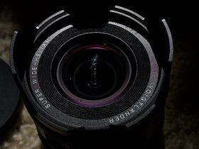

-

15mm_voigtlander_helair -
 35mm_voigtlander_ultron
35mm_voigtlander_ultron
-
 2025
2025
-
 astrophotography
astrophotography
-
 bicycles
bicycles
-
 botanical
botanical
-
 create
create

shane null's photos
For my birthday in 2025 I got my first camera the Nikon Zfc
It is a retro design and I usually use vintage style Voigtlander lenses
I also have a retro motorcycle, wardrobe and dutch bicycle
| Key / Shortcut | Action |
|---|---|
| ← (Left arrow) | Go to previous picture in album |
| → (Right arrow) | Go to next picture in album |
| f | Fullscreen toggle (available in galleria theme) ([GitHub][1]) |
| m | Show map (if show_map setting is true) in galleria theme ([GitHub][1]) |